Home: Bagger User Guide: Checking Bag Status
Checking that a bag is complete
From the BagIt specification: A bag is considered complete if every file in every payload manifest and tag manifest is present, and if every payload file appears in at least one payload manifest. A payload file does not need to appear in every payload manifest as long as it appears in one payload manifest (i.e., it must belong to the "union" of payload manifests). In a complete bag containing one or more tag manifests, any tag file may appear in zero or more of those manifests, but every tag file appearing in any tag manifest must be present in the bag.
- Basic flow:
- 1. User selects to check that a bag is complete.
- 2. Application checks that a bag is complete.
- 3. If a Project profile has been selected, application checks that it has been satisfied.
- 4. Application updates the displayed information with the result, including warning about any unsatisfied fields from Project profile.
- Note: A user may want to check that a bag is complete instead of verifying a bag because it is less time-consuming.
In order to check for a bag’s completeness, the bag must first be saved. Once the bag is saved to disk, the ‘Check is Complete’ button will be enabled. Select the ‘Check is Complete’ button.
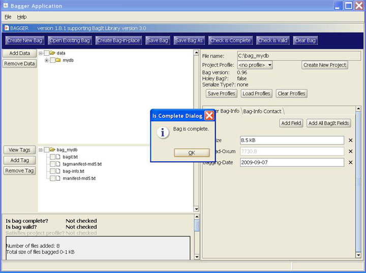
When a bag is complete, the ‘Is Complete Dialog’ pops up with the message: ‘Bag is complete.’
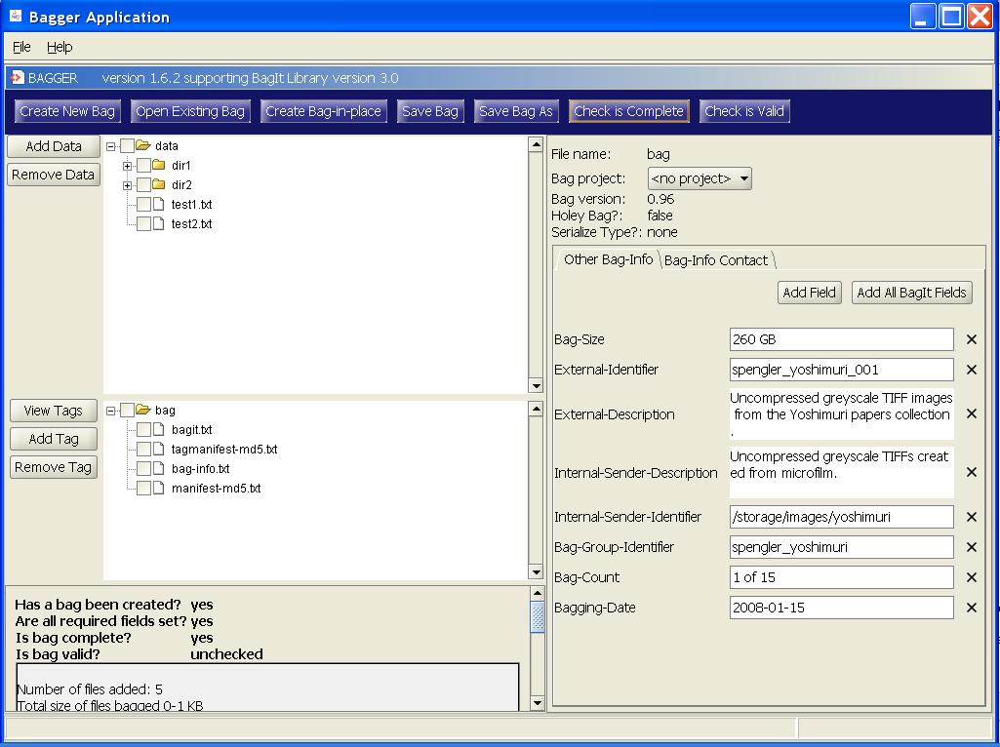
Selecting Ok on the popup dialog displays the bag and the ‘Is bag complete?’ state message will now display ‘yes’.
Incomplete bag
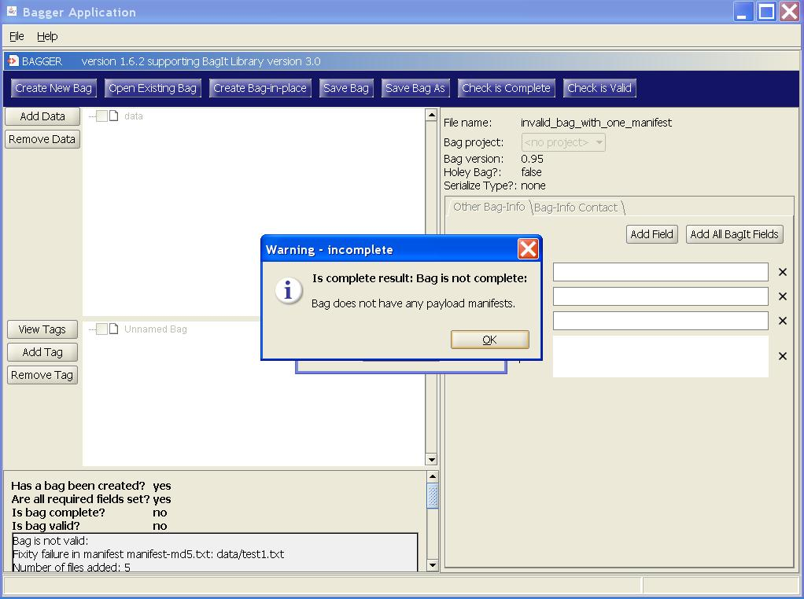
If a bag is not complete, a ‘Warning - incomplete’ popup dialog will appear and display the problem causing the bag to be incomplete. In this example, there is a file in the data payload called ‘robots.txt’ which is not found in the ‘manifest-md5.txt’ tag file.
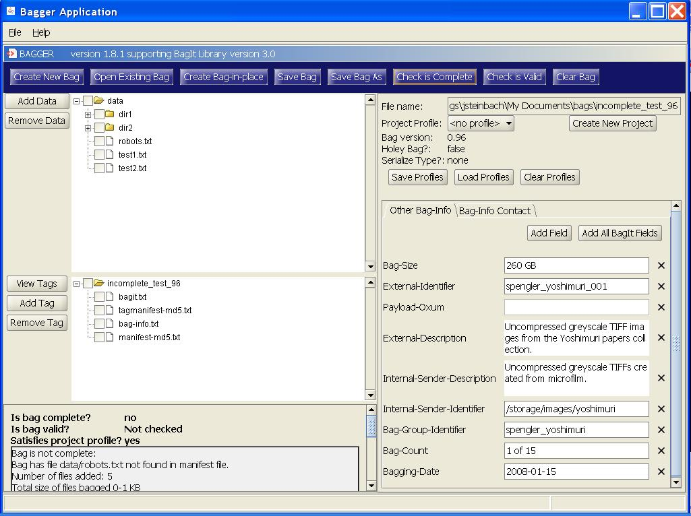
Selecting Ok on the popup dialog displays the bag and the ‘Is bag complete?’ state message will now display ‘no’.
Checking that a bag is valid
The spec does not require a bag-info.txt at all, let alone the contact information. A bag is considered valid if it is complete and if each CHECKSUM in every payload manifest and tag manifest can be verified against the contents of its corresponding FILENAME. Note that tag files (including tag manifest files) can be added to or removed from a bag without impacting the completeness or validity of the bag as long as the tag files do not appear in a tag manifest.
- Basic flow:
- 1. User selects to check that a bag is valid.
- 2. Application checks that a bag is valid.
- 3. If a Project profile has been selected, application checks that it has been satisfied.
- 4. Application updates the displayed information with the result, including warning about any unsatisfied fields from Project profile.
In order to check for a bag’s validity, the bag must first be saved. Once the bag is saved to disk, the ‘Check is Valid’ button will be enabled. Select the ‘Check is Valid’ button.
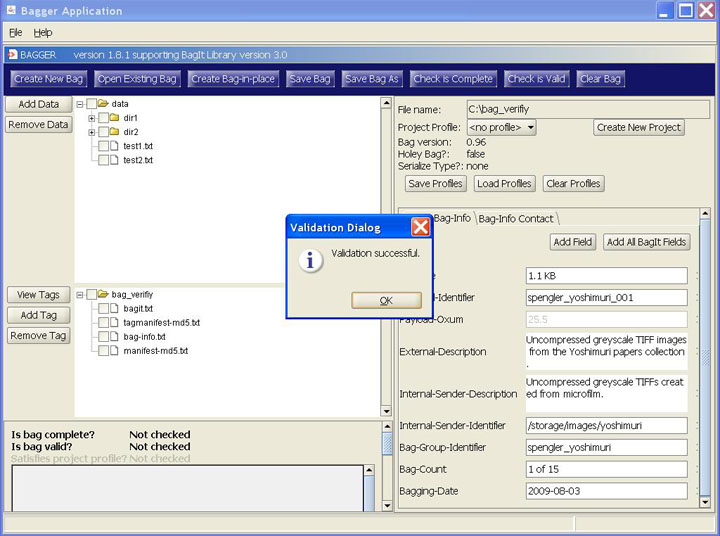
When a bag is valid, the ‘Validation Dialog’ pops up with the message: ‘Validation successful.’
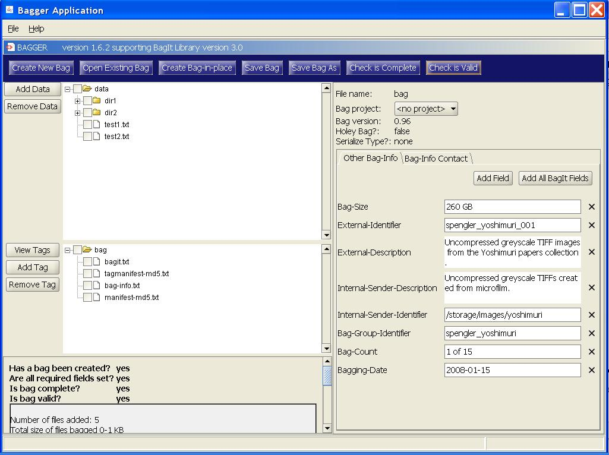
Selecting Ok on the popup dialog displays the bag and both the ‘Is bag complete?’ and ‘Is bag valid?’ state messages will now display ‘yes’.
Invalid bag
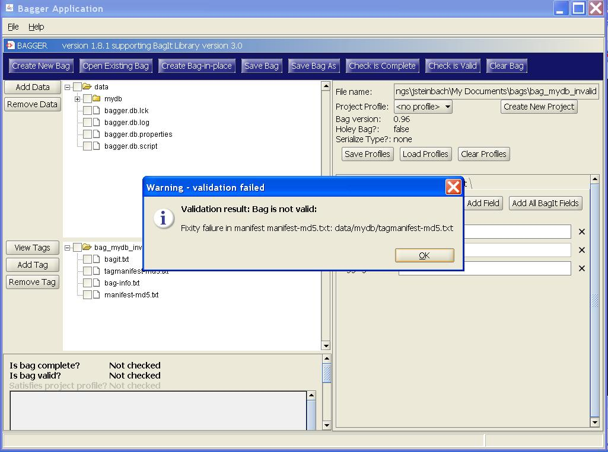
If a bag is not valid, a ‘Warning - validation failure’ popup dialog will appear and display the problem causing the bag to be invalid. In this case there is a mismatch between the fixity values in the manifest and tag manifest files. See the BagIt specification for more information about fixity checksums and bag verification.

Selecting Ok on the popup dialog displays the bag and the ‘Is bag valid?’ state message will now display ‘no’.
Satisfies project profile
If a Project profile other than ‘
- As an example, selecting the Project profile ‘eDeposit’ will automatically include the Bag-Info fields required for that project. This Project profile, by default, requires two Bag-Info fields:
- ’LC-Project’: is required to be present and also is required to have a value equal to the project name, e.g. ‘eDeposit’. This field cannot be modified or removed
- ’Publisher’: is required to be present. This field can be modified but not removed.
Once a Project profile has been selected, any validation check performed by Bagger will also check whether the bag satisfies the Project profile rules. Any required fields will be denoted by an ‘R‘adjacent to the field name.
Enter a value for all ‘Other Bag-Info’ fields and select the ‘Save Bag As’ button.
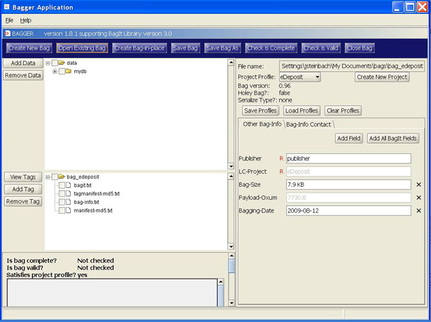
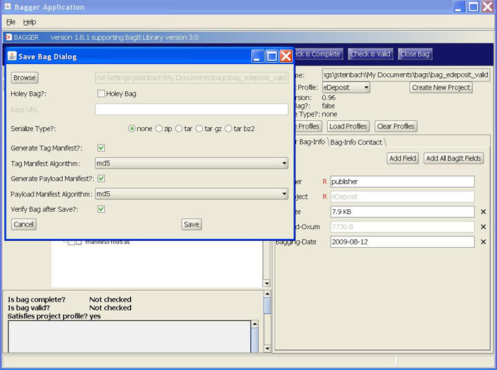
Select the bag file name you desire, select the ‘Verify Bag after Save?’ checkbox, and then select the ‘Save’ button.
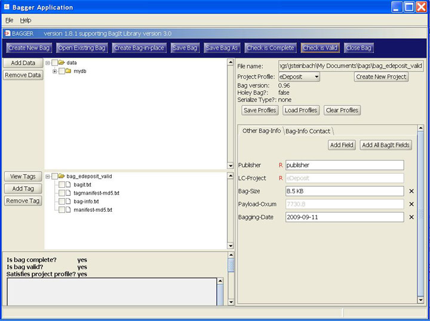
Once you have selected Ok to confirm all of the popup dialog windows, the status console will now display ‘yes’ for all three status checks. Since a Project profile is selected, the ‘Satisfies project profile?’ status is also set to ‘yes’.
Unsatisfied project profile
If there are missing required Bag-Info fields, the ‘Check is complete’ or ‘Check is valid’ test will include a warning about any unsatisfied fields from the Project profile. An invalid bag can still be saved; however, it will not be considered a valid bag for the selected project.
To demonstrate, do not enter a value in the ‘eDeposit’ required field ‘Publisher’. Then select the ‘Save Bag As’ button.
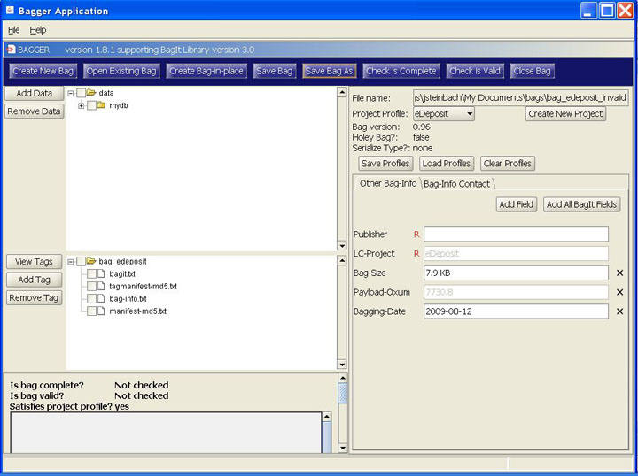
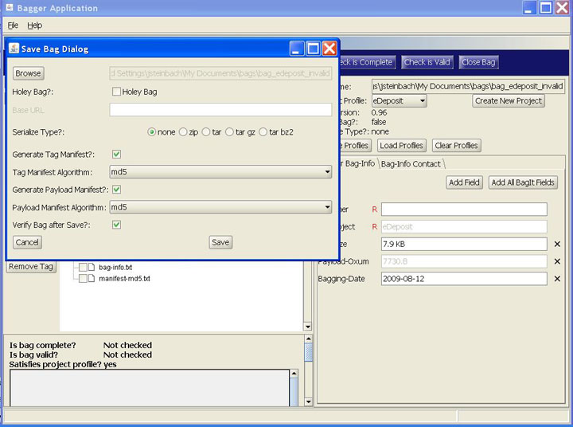
Select the bag file name you desire, select the ‘Verify Bag after Save?’ checkbox, and then select the ‘Save’ button.
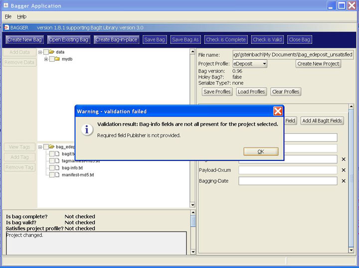
After the bag is saved and the validation check is performed, a ‘Warning - validation failed’ dialog appears indicating that the, 'Required field Publisher is not provided.' Selecting the Ok button will update the bag status console.
Since a Project profile is selected, and there is a missing required field value, the ‘Satisfies project profile?’ status is set to ‘no’.